第四章 基本平面图形·拔尖卷
【北师大版2024】
时间：120分钟 满分：120分
姓名：___________班级：___________考号：___________
考卷信息：
本卷试题共24题，单选10题，填空6题，解答8题，满分120分，限时120分钟，本卷题型针对性较高，覆盖面广，选题有深度，可量化学生的掌握程度！
一、选择题（本大题共10小题，每小题3分，满分30分）
1．（24-25七年级上·黑龙江绥化·期中）明明用圆规画一个周长是31.4cm的圆，圆规两脚间的距离是（ ）cm．
A．15.7 B．5 C．10 D．1
2．如图所示，下列结论正确的是（ ）
A．共有射线 10条，直线 10条 B．共有线段 10条，射线5条
C．共有线段 10条，直线1条 D．共有线段 10条，直线2条
3．从五边形的一个顶点出发，可以画m条对角线，它们将五边形分成n个三角形，则m+n的值为（ ）
A．5 B．6 C．7 D．8
4．如图，延长线段AB至C使BC=2AB，延长线段BA至D使AD=3AB，点E是线段DB的中点，点F是线段AC的中点，若AB=6cm，则EF的长度为（ ）

A．15cm B．16cm C．18cm D．20cm
5．（24-25七年级上·甘肃兰州·期末）如图，射线OC在∠AOB的内部，图中共有3个角：∠AOB，∠AOC和∠BOC，若其中一个角的度数是另一个角度数的两倍，则称射线OC是∠AOB的“平衡线”.若∠AOB=72°，且射线OC是∠AOB的“平衡线”，则∠AOC的度数为（ ）
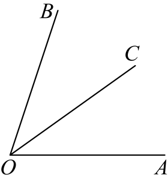
A．24° B．24°或36° C．36°或48° D．24°或36°或48°
6．（24-25七年级上·山东济南·期末）如图，AB为一根长为25 cm的绳子，拉直铺平后，在绳子上任意取两点M、N，分别将AM、BN沿点M、N折叠，点A、B分别落在绳子上的点A′、B′处．当A′B′=5 cm时，MN的长为（ ）

A．10 cm B．25 cm
C．10 cm或15 cm D．15 cm或25 cm
7．（24-25七年级上·陕西咸阳·期末）如图，有两根木条，一根AB长为100cm，另一根CD长为150cm，在它们的中点处各有一枚钉子M，N（钉子大小忽略不计，M，N抽象成两个点），若将它们的一端重合，放置在同一条直线上，此时两根木条上钉子之间的距离MN是（ ）
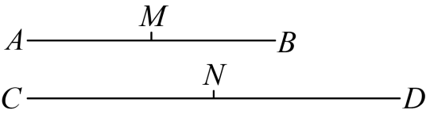
A．50cm B．25cm C．125cm D．25cm或125cm
8．（24-25七年级上·安徽六安·期末）如图，已知∠AOB=120°，OE平分∠AOB，射线OC在∠AOE内部，∠BOC=90°，作射线OF，使射线OC是∠EOF三等分线，则∠AOF的度数为（ ）
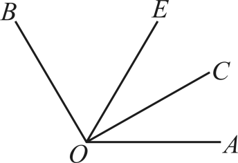
A．15° B．30° C．15°或30° D．30°或45°
9．（24-25七年级上·江苏扬州·期末）如图，已知点A、B在电线OP上，OA=25OP，BP=710OP．若将电线在点A处折叠，使点O、B分别落在点O′、B′处，则用老虎钳在点B′处剪断后，电线OP剪成的三段中，最短的电线与最长的电线长度比是（ ）
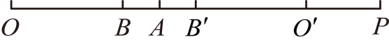
A．1:2 B．1:3 C．2:3 D．2:5
10．如图，C为直线AB上一点，∠DCE为直角，CF平分∠ACD，CH平分∠BCD，CG平分∠BCE，各学习小组经过讨论后得到以下结论：①∠ACF与∠DCH互余；②∠HCG=60°；③∠ECF与∠BCH互补；④∠ACF−∠BCG=45°．下列结论中错误的有（ ）个．
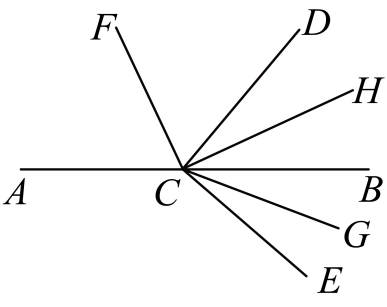
A．1 B．2 C．3 D．4
二、填空题（本大题共6小题，每小题3分，满分18分）
11．将一个圆分割成三个扇形，它们圆心角度数的比1：3：5，则最大扇形的圆心角的度数为 ．
12．如图，已知线段AB=60，点C、D分别是线段AB上的两点，且满足AC:CD:DB=3:4:5，点K是线段CD的中点，则线段AK的长为 ．
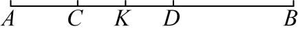
13．（24-25七年级上·河南南阳·期末）如图A、B、C、D四个车站的位置顺次在一条直线上，A，C两站之间的距离AC=3a−12b，B，C两站之间的距离BC=2a−b，B，D两站之间的距离BD=5a+12b−1．若A，B两站之间的距离AB=90km，则C，D两站之间的距离CD为 km．
14．已知∠AOB=60°，画射线OC，使∠AOC∶∠BOC=7∶5，OM平分∠AOB，ON平分∠BOC，则∠MON= ．
15．如图1，一款暗插销由外壳AB，开关CD，锁芯DE三部分组成，其工作原理如图2，开关CD绕固定点O转动，由连接点D带动锁芯DE移动．图3为插销开启状态，此时连接点D在线段AB上，如D1位置．开关CD绕点O顺时针旋转180°后得到C2D2，锁芯弹回至D2E2位置（点B与点E2重合），此时插销闭合如图4．已知CD=72mm，AD2−AC1=50mm，则BE1= mm．
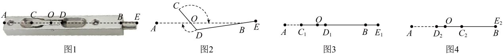
16．（24-25七年级上·安徽合肥·期末）定义：如果一个角内部的一条射线将这个角分成两个角，其中一个角是另一个角的n倍，那么我们将这条射线称为这个角的n+1分位线．例如：如图1，∠MOP=4∠NOP，则OP为∠MON的5分位线；∠NOQ=4∠MOQ，则OQ也是∠MON的5分位线．
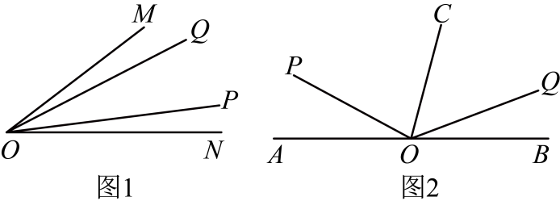
（1）如图2，点A、O、B在同一条直线上，OC为一条射线，OP，OQ分别为∠AOC与∠BOC的3分位线，（∠COP>∠POA，∠COQ>∠QOB），∠AOC=150°，则∠POQ= ；
（2）如果点A、O、B在同一条直线上，OC为一条射线，已知射线OM、ON分别为∠AOC与∠BOC的5分位线，且∠MON=96°，则∠AOC= ．
三、解答题（本大题共8小题，满分72分）
17．（6分）如图，已知线段AB，点D是线段AB上的一点，延长AB到C，使BC=BD．
(1)请补全图形；
(2)若AC=8,BD=3．求线段BC、AD的长．
(3)试说明：AD+AC=2AB．
18．（6分）如图，已知∠AOB，OE平分∠AOC，OF平分∠BOC．
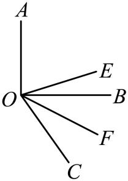
(1)若∠AOB是直角，求∠EOF的度数；
(2)若∠AOB+∠EOF=156°，则∠EOF是多少度？
19．（8分）（24-25七年级上·河南漯河·期末）如图，点C在线段AB上，AC=10，BC=13AB．
(1)求AB的长．
(2)若DE=8，线段DE在线段AB上移动，且点D在点E的左侧．
①当D为AC的中点时，求BE的长．
②点F（不与点A，B，C重合）在线段AB上，且AF=2AD，CF=2，求出AE的长．
20．（8分）已知，在∠AOB内部作射线OC，OD平分∠BOC，∠AOD+∠COD=120°．
(1)如图1，求∠AOB的度数；
(2)如图2，在∠COD内部作射线OM，使∠BOM=4∠COM，在∠AOB外部作射线OE，使得∠BOE=1110∠AOC，作OF平分∠DOE，当∠AOC=20°时，求∠DOM、∠DOF的度数．
21．（10分）（24-25七年级上·甘肃兰州·期末）如图，在射线OM上有A，B，C三点，满足OA=4cm，AB=12cm，BC=2cm．点P从点O出发，沿OM方向以1cm/s的速度运动；点Q从点C出发在线段CO上向点O匀速运动（点Q运动到点O时停止运动），两点同时出发．
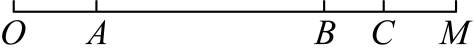
(1)当PA=2PB（P在线段AB上）时，点Q运动到的位置恰好是线段AB的中点，则点Q的运动速度为 cm/s．（直接写出答案即可）
(2)若点Q的运动速度为3cm/s，经过多长时间P、Q两点相距10cm？
(3)当点P运动到线段AB上时，分别取OP和AB的中点E、F，则OB−APEF= ．（直接写出答案即可）
22．（10分）（24-25七年级上·浙江杭州·期末）如图，已知线段OA,OB,OC,OD,OE在同一平面内，且∠AOE=110°，∠AOB=20°．
(1)若OB平分∠AOC，求∠COE的度数；
(2)在（1）条件下，若OD也平分∠BOE，求∠COD的度数；
(3)若线段OA与OB分别为同一钟表上某一时刻的时针与分针，则经过多少时间，OA与OB第一次垂直．
23．（12分）（24-25七年级上·福建福州·期末）【背景知识】数轴是初中数学的一个重要工具，利用数轴可以将数与形完美地结合．研究数轴我们发现了许多重要的规律：若数轴上点A、点B表示的数分别为a、b，则A，B两点之间的距离AB=a−b，线段AB的中点表示的数为a+b2．
【问题情境】如图，在数轴上，点A在原点O的左侧，点B在原点O的右侧，点A所对应的数a满足a+4=0，且AB=12，点D从A出发以1个单位长度/秒的速度沿数轴向右运动，点E从B出发以2个单位长度/秒的速度沿数轴向左运动，当D、E两点相遇时停止运动．
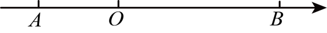
【综合运用】
(1)直接写出点A表示的数为 ，点B表示的数为 ；
(2)点P为线段DE的中点，D、E两点同时开始运动，设运动时间为t秒，线段OP的长为d个单位长度，求用含t的整式表示d；
(3)在（2）条件下，点C在线段AB上，且AC=2BC，当t为何值时，满足2OP+3CE=CD．
24．（12分）（24-25七年级上·天津·期末）已知∠AOB=90°，∠COD=60°，按如图1所示摆放，将OA、OC边重合在直线MN上，OB、OD边在直线MN的两侧：

(1)如图1，作射线OE平分∠AOB，射线OF平分∠COD，补全图形，并求出∠EOF的度数．
(2)保持∠AOB不动，将∠COD绕点O旋转至如图2所示的位置，则
①∠AOC+∠BOD=___________°（度）（直接写答案）
②∠BOC−∠AOD=___________°（度）（直接写答案）
(3)若∠COD按每分钟5°的速度绕点O逆时针方向旋转，∠AOB按每分钟2°的速度也绕点O逆时针方向旋转，OC旋转到射线ON上时都停止运动，设旋转t分钟，计算∠MOC−∠AOD．请画出图形并直接写出对应的结果（用含t的代数式表示）．